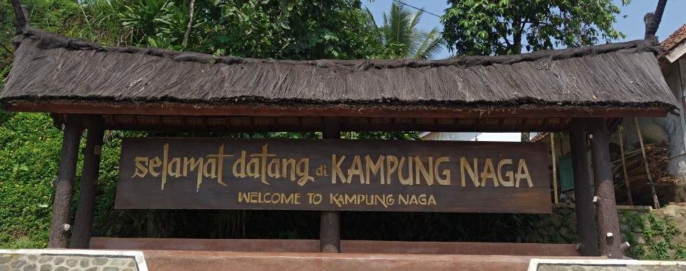
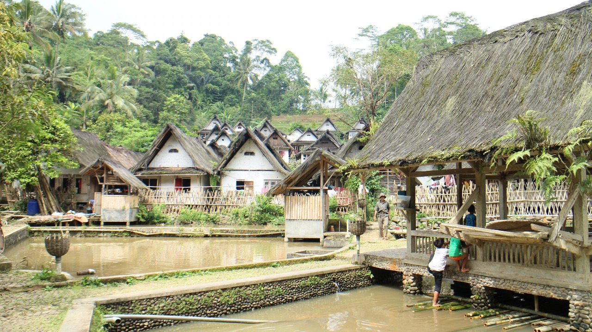
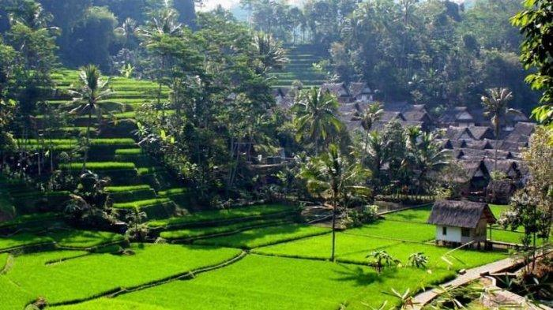
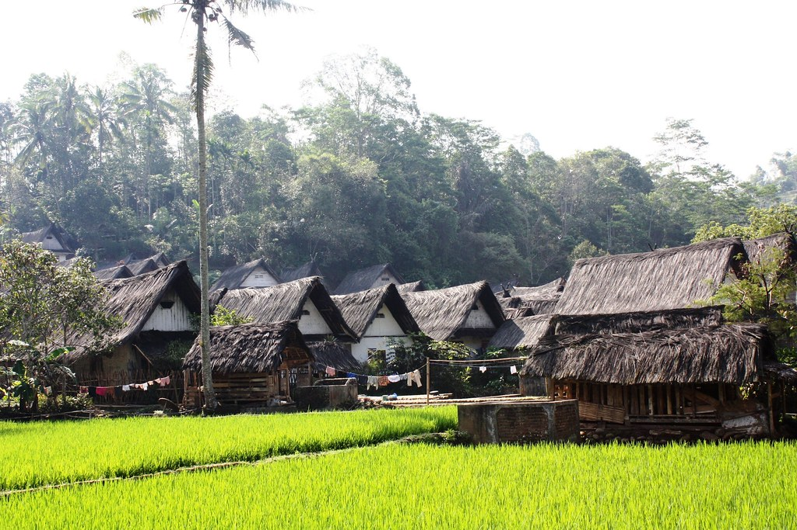

Kampung Naga
Orientasi

Kampung Naga nyaéta hiji lembur adat anu perenahna di Désa Neglasari, Kacamatan Salawu, Kabupatén Tasikmalaya, Jawa Barat. Sanajan ngan ukur 500 méter ti jalan raya utama nu nyambungkeun Garut jeung Tasikmalaya, Kampung Naga hasil ngajaga tradisi jeung adat karuhun di tengah arus modérnisasi.
Kalayan legana sakitar 4 héktar, Kampung Naga dipaké pikeun tempat cicing masarakat, pekarangan, balong lauk, sarta sawah tatanén.
Sejarah

Ngaran "Naga" dipercaya asalna tina kecap "Nagawir" dina basa Sunda, nu hartina pasir curam. Ngaran ieu ngagambarkeun kaayaan géografis Kampung Naga anu aya di lebak kalayan pasir-pasir nu curam di sakurilingna.
Sejarah Kampung Naga dimimitian ti jaman Syekh Syarif Hidayatullah, atawa leuwih dipikawanoh salaku Sunan Gunung Jati. Anjeunna boga abdi ngaranna Singaparna nu dibéré tugas nyebarkeun Islam di beulah kulon. Singaparna ahirna nepi ka Désa Neglasari, di mana anjeunna disambut hadé ku warga satempat sarta dingaranan Sembah Dalem Singaparna.
Kahirupan Sosial

Kahirupan masarakat Kampung Naga diatur ku adat istiadat nu ketat. Aranjeunna ngayakeun rupa-rupa upacara tradisional anu diturunkeun ti karuhun. Leuwih ti éta, masarakat di dieu ngajaga leuweung sakral anu teu meunang dieksploitasi, sangkan lingkungan tetep lestari.
Warga Kampung Naga ngaku agama Islam. Islam sumebar di Kampung Naga ti abad ka-17, nalika karajaan Islam sumebar di Jawa Barat. Beuki lila, budaya Islam beuki kapangaruhan di Kampung Naga.
Wisata jeung Atikan
Kampung Naga geus jadi tempat wisata budaya anu dipikaresep ku wisatawan domestik jeung luar nagri.
Gambar Lingkungan Saeutik

Sémah bisa diajar kahirupan tradisional Sunda, arsitektur imah adat, sarta ajén-ajén kearifan lokal nu masih kénéh dijaga ku masarakat satempat.
Gambar Imah Kampung Naga

Kalayan sagala kaunikanana, Kampung Naga jadi conto nyata kumaha hiji komunitas tiasa ngajaga tradisi jeung budaya karuhun sanajan jaman terus maju, sarta tetep ngajaga kelestarian lingkungan ngaliwatan kearifan lokal.